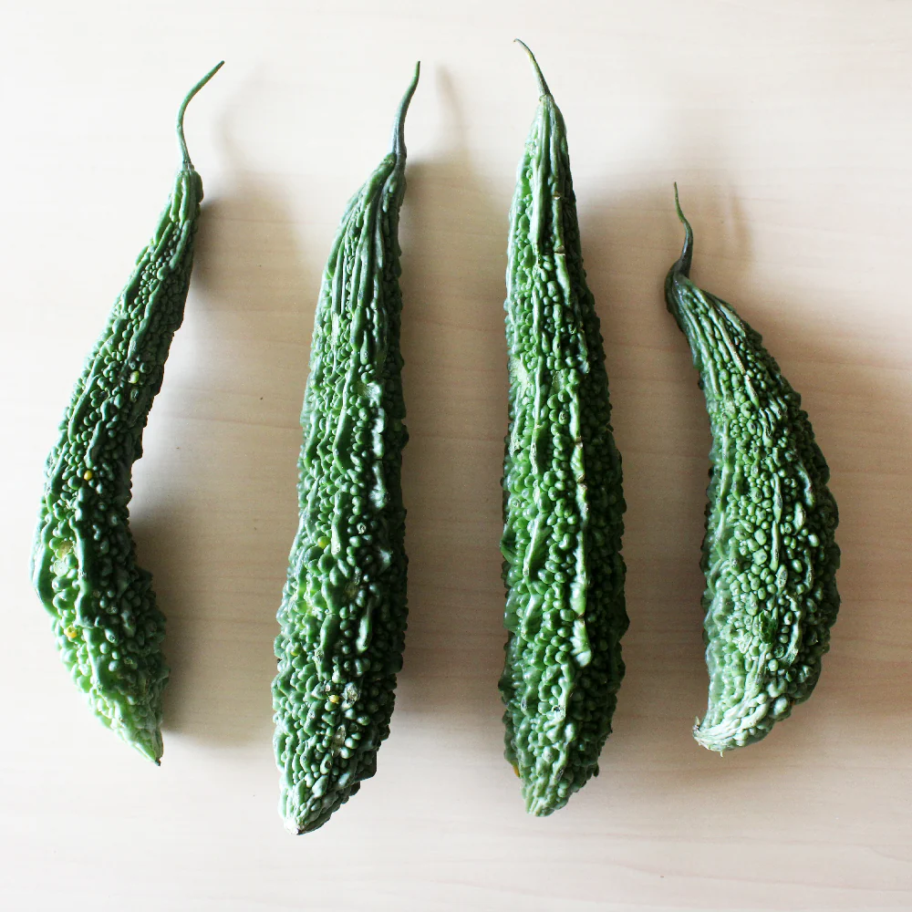

Home Remedies
Gastritis
Gastritis can be a common issue for elderly individuals. Here are some Ayurvedic home remedies that may help manage symptoms:
Ayurvedic Home Remedies for Gastritis
- Aloe Vera Juice: Drinking a small amount of aloe vera juice before meals can help soothe the stomach lining and reduce inflammation.
- Ginger Tea: Ginger has anti-inflammatory properties. Boil fresh ginger slices in water, strain, and drink it as tea to help alleviate gastric discomfort.
- Turmeric Milk: Turmeric is known for its healing properties. Mix a teaspoon of turmeric powder in warm milk and drink it before bedtime to help reduce inflammation.
- Fennel Seeds: Chewing on fennel seeds after meals can aid digestion and reduce bloating and gas.
- Warm Water with Honey: Drinking warm water mixed with a teaspoon of honey can help soothe the stomach and improve digestion.
- Rice Water: Boil rice in water, strain the water, and drink it. This can help soothe the stomach and provide relief from gastritis symptoms.
- Mint Tea: Peppermint can help relax the muscles of the gastrointestinal tract. Brew fresh mint leaves in hot water and drink it as tea.
Constipation
Constipation is a common issue in the elderly, and managing it is crucial for comfort and health. Here are some Ayurvedic remedies:
Ayurvedic Home Remedies for Constipation
- Warm Water with Lemon: Drinking warm water mixed with lemon juice in the morning can stimulate digestion and help relieve constipation.
- Prunes: Eating prunes or drinking prune juice can be effective in relieving constipation due to their high fiber content.
- Flaxseeds: Ground flaxseeds can be added to cereals or yogurt to increase fiber intake and promote regular bowel movements.
 Psyllium Husk: Taking psyllium husk with water can help bulk up stool and make it easier to pass.
Psyllium Husk: Taking psyllium husk with water can help bulk up stool and make it easier to pass.- Warm Milk: Drinking a glass of warm milk before bedtime can help relax the digestive system and promote bowel movements.
 High-Fiber Vegetables: Including vegetables like spinach, broccoli, and carrots in the diet can help maintain regular bowel movements.
High-Fiber Vegetables: Including vegetables like spinach, broccoli, and carrots in the diet can help maintain regular bowel movements.
Hypertension (High Blood Pressure)
Hypertension is a common condition in the elderly, and managing it is crucial for overall health. Here are some Ayurvedic remedies:
Ayurvedic Home Remedies for Hypertension
 Garlic: Consuming raw garlic or garlic supplements may help lower blood pressure due to its ability to relax blood vessels and improve circulation.
Garlic: Consuming raw garlic or garlic supplements may help lower blood pressure due to its ability to relax blood vessels and improve circulation.- Hibiscus Tea: Drinking hibiscus tea has been shown to have a positive effect on lowering blood pressure.
- Olive Oil: Incorporating extra virgin olive oil into your diet can help improve heart health and manage blood pressure.
 Turmeric: The anti-inflammatory properties of turmeric may help lower blood pressure.
Turmeric: The anti-inflammatory properties of turmeric may help lower blood pressure.- Regular Exercise: Engaging in regular physical activity, such as walking or yoga, can help maintain a healthy blood pressure.
- Reduce Sodium Intake: Limiting salt in the diet can significantly help in managing hypertension.
Diabetes
Managing diabetes is essential for the elderly to prevent complications. Here are some Ayurvedic remedies:
Ayurvedic Home Remedies for Diabetes
- Fenugreek Seeds: Soaking fenugreek seeds overnight and consuming them in the morning can help lower blood sugar levels.
-  Bitter Gourd (Karela): Drinking bitter gourd juice or including it in meals can help regulate blood sugar levels.
 Cinnamon: Adding cinnamon to food or drinks may help improve insulin sensitivity and lower blood sugar levels.
Cinnamon: Adding cinnamon to food or drinks may help improve insulin sensitivity and lower blood sugar levels. Indian Gooseberry (Amla): Consuming fresh amla or amla juice can help regulate blood sugar levels and improve overall health.
Indian Gooseberry (Amla): Consuming fresh amla or amla juice can help regulate blood sugar levels and improve overall health.- Chia Seeds: Chia seeds are high in fiber and can help stabilize blood sugar levels when consumed in water or added to meals.
- Yoga and Meditation: Practicing yoga and meditation can help reduce stress and improve overall health, which is beneficial for managing diabetes.